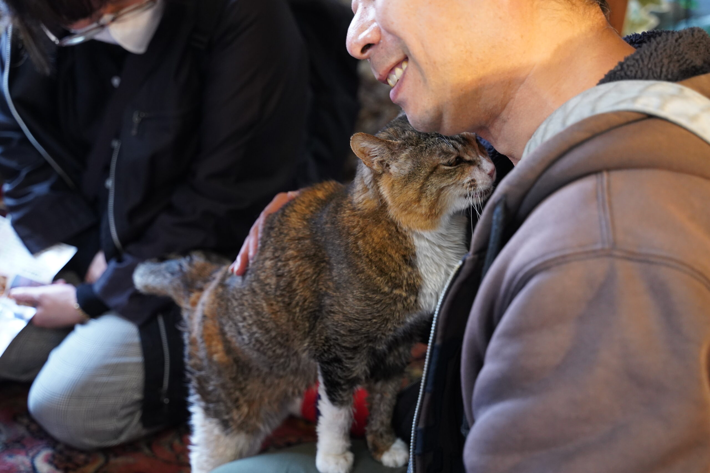

お問い合わせ
【ご支援のお願い】
アトリエ高菜先生は、すべての方に安心して訪れていただける「無料の保護猫コミュニティスペース」として運営しております。
ドリンクや猫たちのごはん、トイレの砂など、日々の運営に必要なものはすべて、これまで私たち自身でまかなってきました。
今後は、より持続可能な形でこの場所を守っていくために、Amazon「欲しいものリスト」を通じたご支援をお願いすることにしました。
ご無理のない範囲で、応援いただけましたらとても嬉しいです。
あなたのやさしさが、この場所と猫たちの日常を支えてくれます。

お問い合わせ・ご予約
スムーズなご案内のため、事前のご予約をおすすめしております。
LINEで予約
Reserve by LINE
リンククリック後に表示される項目の回答をお送りください。24時間受け付けており返信は必ず致します。スムーズにご予約を希望されるお客様はぜひご利用ください。お急ぎの場合は、お電話でお問い合わせ頂ければと思います。
Please send your inquiries after clicking the link; we accept them 24 hours a day and will always respond. Customers who wish for a smooth reservation process are encouraged to use this service. We respond to inquiries via LINE from 9 AM to 9 PM. If you need immediate assistance outside these hours, please contact us by phone.
電話で予約
Reserve by Phone
お電話が繋がらない場合はLINEにてご連絡いただけるとスムーズです。
We kindly ask you to inform our staff about your interest in the experience when calling. If the call does not connect, contacting us via LINE would ensure a smoother process.
WhatsAppで予約
Reserve by WhatsApp
リンククリック後に表示される項目の回答をお送りください。24時間受け付けており返信は必ず致します。スムーズにご予約を希望されるお客様はぜひご利用ください。WhatsAppでのお問い合わせは朝9時〜夜6時の間で返事させて頂きます。
Please send your inquiries after clicking the link; we accept them 24 hours a day and will always respond. Customers who wish for a smooth reservation process are encouraged to use this service. We respond to inquiries via WhatsApp from 9 AM to 9 PM.
よくあるご質問
アクセス
アトリエ高菜先生
| 住所 | 〒401-0301 山梨県南都留郡富士河口湖町船津3250-3 |
|---|---|
| 駐車場 | 無料駐車場有 |
| 予約 | 不要 （ほぼ年中無休で営業しておりますが、確実にご利用になりたいという方は事前のお問い合わせをお願い致します。） |
| 営業時間 | AM 11:00~17:00 |
| 定休日 | 不定休 |
| 催行人数 | 1名〜 |
| 最寄駅 | 富士急行線河口湖駅（徒歩12分） |